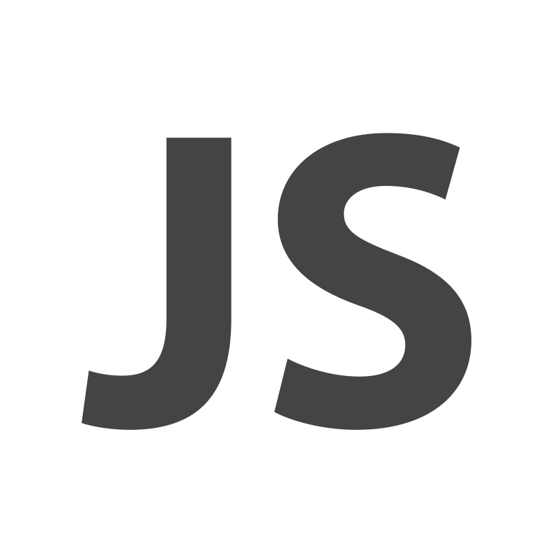
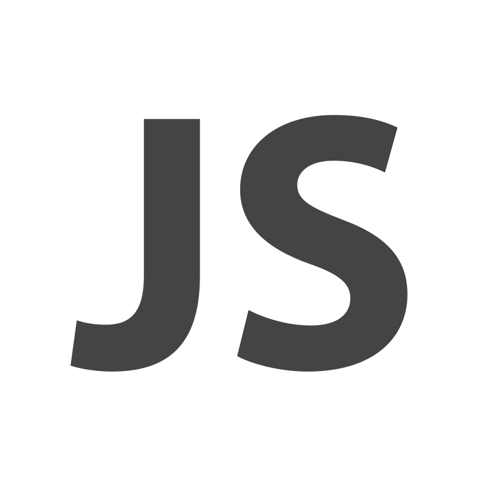

Sobre mí
Soy estudiante de Desarrollo de Aplicaciones Multiplataforma, con formación previa en Comunicación Audiovisual y experiencia en atención al cliente. Esta trayectoria me ha permitido combinar habilidades técnicas y comunicativas, desarrollando competencias en programación, diseño de interfaces y gestión de bases de datos, junto con una visión creativa y estructurada del contenido digital.
Gracias a mi experiencia laboral, he reforzado aptitudes como la escucha activa, la empatía y la resolución de problemas en tiempo real. Me interesa crear soluciones tecnológicas intuitivas y accesibles, pensadas para el usuario, y abordar el desarrollo desde una perspectiva integral: no solo cómo funcionan, sino cómo se usan y se sienten.
Tecnologías
 Java

JavaScript
Java

JavaScript
 HTML
HTML
 CSS
CSS
 PHP
PHP
 MySQL
PhpMyAdmin
MySQL
PhpMyAdmin
 Node.js
Node.js
 Visual Studio Code
Visual Studio Code
 Eclipse
Android Studio
Eclipse
Android Studio
 Docker
Docker
 GitHub
GitHub
Experiencia relevante
Atención al cliente multicanal, resolución de incidencias y uso de herramientas digitales.
Fecha: Marzo 2018 - Actualidad
Gestión de contenidos, redes sociales y diseño corporativo.
Fecha: Junio 2015 - Marzo 2016
Proyectos
RPG Dragon Repeller
Aventura RPG de texto con exploración, combate y humor oculto.
Leer más ˅
Dragon Repeller es un sencillo juego RPG de texto en el que el jugador debe derrotar a un dragón que impide a los habitantes abandonar el pueblo. La aventura transcurre entre varios escenarios como la plaza principal, una tienda, una cueva y una arena de combate. El jugador puede desplazarse entre estas ubicaciones, comprar y vender armas, luchar contra monstruos y ganar experiencia y oro. El juego hace un seguimiento continuo de la salud, el oro y la experiencia del personaje, actualizando su estado en tiempo real. Además, incluye huevos de pascua ocultos que añaden un toque de humor al desarrollo. El objetivo final es vencer al dragón y liberar al pueblo.
El juego está desarrollado con HTML, CSS y JavaScript en conjunto con un compañero.
 Repositorio RPG Dragon Repeller
Demo
Repositorio RPG Dragon Repeller
Demo
Formación
Formación centrada en el diseño, desarrollo y mantenimiento de aplicaciones para distintos entornos (web, móvil y escritorio). Estoy adquiriendo conocimientos en programación orientada a objetos, bases de datos, interfaces gráficas y entornos de desarrollo multiplataforma. Este ciclo me está ayudando a construir una base técnica sólida y a descubrir qué tipo de proyectos me motivan como futura desarrolladora.
Fecha: Octubre 2024 - Actualmente
Formación centrada en la creación y gestión de contenidos digitales, narrativa visual, comunicación efectiva y trabajo colaborativo. Esta base me ha aportado habilidades creativas, organizativas y comunicativas que aplico en el desarrollo de aplicaciones orientadas al usuario.
Fecha: Septiembre 2010 - Julio 2016
Objetivos profesionales
Actualmente estoy cursando el último año del ciclo de Desarrollo de Aplicaciones Multiplataforma y busco realizar mis prácticas entre enero y marzo de 2026. Me interesa formar parte de un equipo donde pueda aplicar lo aprendido, seguir desarrollando habilidades técnicas y adquirir experiencia real en proyectos web o móviles. Estoy abierta a aprender, aportar y crecer profesionalmente en un entorno colaborativo.